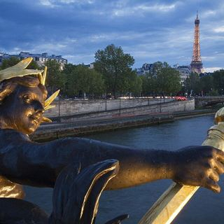
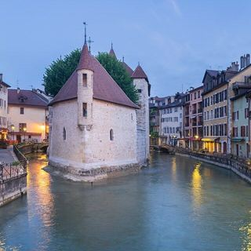
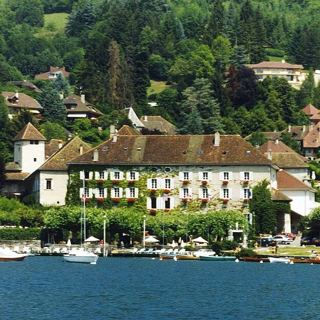
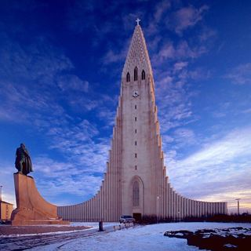
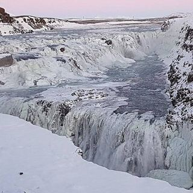
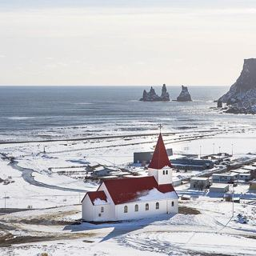
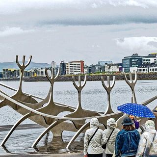
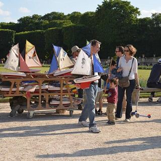
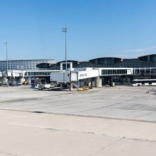

Tap a highlight for a photo and details.

01Thu 10 – Mon 14 Dec · 4 nights
Paris, first stretch
✈ Fly in: QR39 lands CDG 13:15, taxi ~45 min
More ~$3.2k
- Stay
- Family room or apartment in the 6th or 7th (not booked)
- Plan
- Thu 10: rest day after ~30 h of travel
- Fri 11: light day — Notre-Dame + Seine cruise
- Sat 12: Eiffel Tower; Le Soufflé lunch
- Sun 13: Arc de Triomphe morning; lights optional
- Also
- Cost
- ~$3.2k likely ($2.3k–$4.3k)
- To check
- Accommodation not booked. Check the cancellation terms before booking.

02Mon 14 – Fri 18 Dec · 4 nights
Annecy
🚄 TGV Paris → Annecy, 12:46, ~3 h 45
More ~$2.8k
- Stay
- Novotel Annecy Centre or Royal Annecy apartment (not booked)
- Plan
- Pick up hire car 16 Dec for Semnoz and Talloires
- Semnoz depends on snow; Thu 17 is the fallback
- Château closed Tuesdays
- Also
- Cost
- ~$2.8k likely ($2.1k–$4.0k)
- To check
- Rates researched on 2 Oct are for 13–18 Dec. Re-quote for 14–18 Dec.

03Fri 18 – Sun 20 Dec · 2 nights
Talloires
🚗 Drive 25 km along the lake
More ~$1.0k
- Stay
- Lakeside apartment (not booked)
- Plan
- Sat 19 Dec: school holidays start, expect crowds
- Icy trails? Swap the hike for the lakefront and a café
- Cost
- ~$1.0k likely ($0.7k–$1.3k)
- To check
- Apartment not chosen yet; rate is an estimate.
✈ Sun 20 Dec · Fly to Iceland

04Sun 20 – Tue 22 Dec · 2 nights
Reykjavík, arrival
✈ Fly Geneva → Keflavík 14:40 (not booked)
More ~$3.7k
- Stay
- Central Reykjavík apartment or hotel (not booked)
- Plan
- Land after dark: day one is bed and a hot meal
- Daylight only ~11:15–15:30
- Cost
- ~$3.7k likely ($2.5k–$5.4k)
- To check
- The Geneva to Reykjavík flight is not booked. Backup: Geneva to Paris, then Paris to Keflavík.

05Tue 22 – Thu 24 Dec · 2 nights
Golden Circle and Flúðir
🚙 Collect 4WD, drive to Selfoss / Flúðir
More ~$2.4k
- Stay
- Guesthouse or cabin near Flúðir, Selfoss or Hella (not booked)
- Plan
- On the road by 11:00 to beat the 15:30 sunset
- Check road.is and vedur.is every morning
- Shop on 23 Dec: stores close for Christmas
- Cost
- ~$2.4k likely ($1.7k–$3.4k)
- To check
- Lodging not chosen; Christmas Eve opening hours need checking.

06Thu 24 – Sat 26 Dec · 2 nights
Vík and the South Coast
🚙 Drive 160 km on Route 1 via the waterfalls
More ~$1.3k
- Stay
- Guesthouse or small hotel in or near Vík (not booked)
- Plan
- Christmas Day: most places closed, scenery is the plan
- Book Christmas Eve dinner now
- Reynisfjara: never turn your back on the sea
- Cost
- ~$1.3k likely ($1.0k–$1.8k)
- To check
- Lodging not chosen. If Route 1 closes, stay in the Golden Circle and skip Vík.

07Sat 26 – Mon 28 Dec · 2 nights
Reykjavík, last nights
🚙 Drive back 180 km to Reykjavík
More ~$1.7k
- Stay
- Central Reykjavík apartment or hotel (not booked)
- Plan
- Leave ~04:15 on 28 Dec for the 07:30 flight
- Pool day = warm, easy recovery
- Cost
- ~$1.7k likely ($1.1k–$2.4k)
- To check
- The Keflavík to Paris flight is not booked. FI542 07:30 runs daily on the schedule data; Icelandair also fills up around New Year.
✈ Mon 28 Dec · Fly back to Paris

08Mon 28 – Wed 30 Dec · 2 nights
Paris, second stretch
✈ Fly Keflavík → CDG 07:30–12:00 (not booked)
More ~$2.8k
- Stay
- Same 6th/7th hotel as the first stretch, ideally (not booked)
- Plan
- Mon 28: light afternoon only
- Wed 30: optional Galeries Lafayette, then RER B at 11:00
- Cost
- ~$2.8k likely ($2.0k–$3.9k)
- To check
- Accommodation not booked.

09Wed 30 – Thu 31 Dec · 1 night
Paris CDG airport night
🚆 RER B or taxi to CDG, ~1 h
- Exit night, no sightseeing
More ~$0.5k
- Stay
- Novotel, Mercure or ibis at CDG (not booked)
- Plan
- Be at the terminal by 12:00 for QR40 at 15:15 on 31 Dec
- Nothing else planned for the 31st
- Cost
- ~$0.5k likely ($0.4k–$0.6k)
- To check
- Not booked.